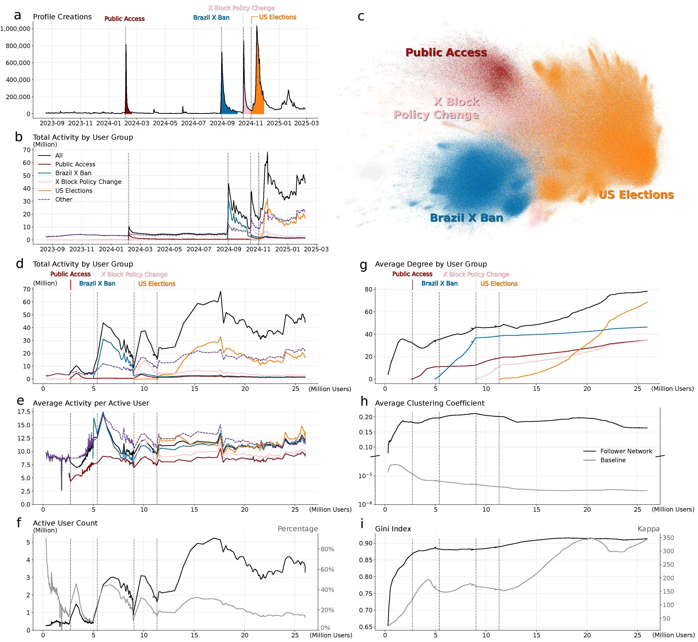
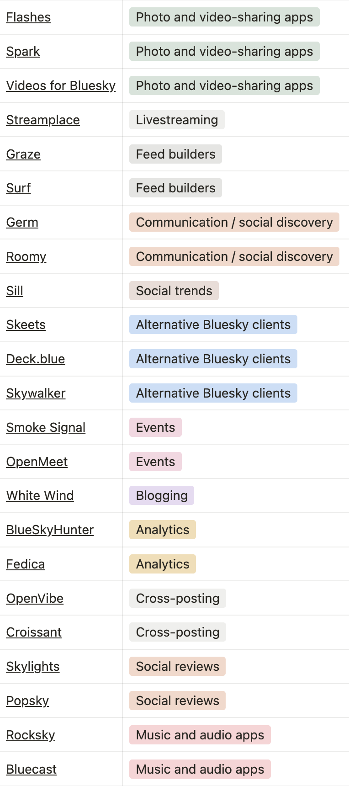
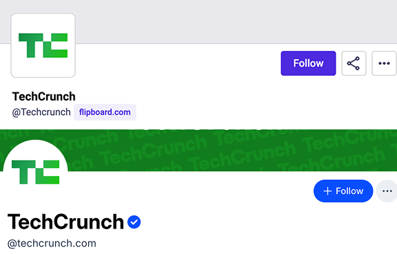
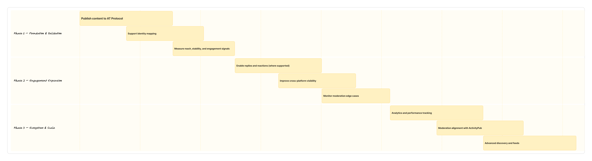

AT Protocol (Bluesky) Integration
AT Protocol integration feasibility and product strategy to future-proof Clip Symphony and expand decentralized content distribution.
Overview
ClipSymphony already supported ActivityPub to distribute content across the Fediverse. As decentralized social platforms gained traction, we explored whether integrating AT Protocol (Bluesky) would expand reach, strengthen product positioning, and align with the open web strategy.
I led the feasibility analysis, product strategy, and recommendation, balancing market signals, technical constraints, and long-term platform goals.
Problem
While ActivityPub covers a large portion of the Fediverse, AT Protocol was emerging as a parallel ecosystem with fast user growth and strong engagement.
Key Question
Should we invest in integrating the AT Protocol (Bluesky), and what would be the technical, product, and business implications?
Answer (TL;DR)
Yes — with constraints. The integration was technically feasible, strategically aligned with decentralization trends, but required phased rollout and clear success metrics.
Goals
Business Goals
- Expand potential reach for published content
- Strengthen ClipSymphony’s position in the decentralized web space
- Future-proof distribution strategy
Product Goals
- Maintain a simple publishing experience
- Avoid fragmenting user identity or workflows
- Ensure integrations scale beyond a single platform
Success Criteria
- Clear recommendation backed by data
- Alignment with existing ActivityPub strategy
My Role
Product Manager — Strategy & Feasibility
I owned the feasibility study end-to-end, working closely with engineering and leadership to evaluate technical viability, strategic fit, and opportunity cost before committing development resources.
Responsibilities
- Defined feasibility and evaluation criteria
- Led research and competitive analysis
- Facilitated stakeholder alignment and decision-making
- Produced go / no-go recommendations and rollout options
Research & Market Analysis
I started by analyzing AT Protocol adoption trends and ecosystem maturity.
Key findings
- Bluesky moved from invite-only to public access in early 2024.
- The network surpassed 30M users by early 2025 and continued growing steadily.
- Daily growth stabilized at ~25k–30k new users.
- Active users represented ~15% of total registrations — consistent with healthy social platforms.
Beyond Bluesky, AT Protocol was already powering dozens of apps across categories such as:
- Media sharing
- Feed builders
- Analytics tools
- Cross-posting services
This indicated the protocol was not a single-app dependency, but a growing ecosystem.

Competitive & Ecosystem Review
I mapped existing AT Protocol–based products to understand:
- What use cases were already saturated
- Where ClipSymphony could add unique value
- How content traveled across the ecosystem
Key insight
Content published once could propagate across multiple AT Protocol apps, increasing discoverability without extra effort from creators.
This reinforced the idea that protocol-level integration was more valuable than building for a single platform.

Technical & Product Feasibility
Identity & Handles
I compared identity models between ActivityPub and AT Protocol:
- ActivityPub uses @user@instance
- AT Protocol supports domain-based handles (e.g. @publisher.com)
This aligned well with ClipSymphony’s identity model, enabling consistent brand identity across platforms.
Integration considerations
- Native API integration vs third-party bridges
- Moderation and content consistency
- Real-time publishing reliability
- Long-term maintenance cost
A key decision was to avoid fragile bridging bots and focus on native protocol support, preserving product quality and reliability.

My recommendation was to proceed with AT Protocol integration
Why
- Strong and sustained user growth
- Strategic alignment with open web values
- High content portability
- Complements ActivityPub rather than replacing it
How
- Native AT Protocol support
- Unified publishing workflow
- No additional complexity for users
Stakeholder Considerations
- Engineering concerns about long-term maintenance
- Leadership questions around ROI and adoption risk
- Product trade-offs with existing roadmap priorities
My role was to make a clear go-forward recommendation by balancing growth opportunity, technical feasibility, and delivery risk.
Data & Signals Considered
- AT Protocol reached 35M+ users with sustained daily growth.
- Only ~15% active users, indicating strong potential but evolving engagement.
- Majority of ecosystem apps focus on content discovery, not deep interaction.
- Engineering analysis showed higher complexity for moderation and interaction parity.
Insight
Early value could be captured through content reach and portability, without incurring the full cost of real-time interaction and moderation.
Decision
Proceed with a phased AT Protocol integration focused on publishing and identity support, while deferring advanced interactions (replies, moderation syncing, analytics).
Resulting Trade-off
We optimized for speed, learning, and strategic presence, accepting limited functionality in exchange for faster validation and lower long-term risk.
Suggested Rollout Phases
Phase 1 — Foundation & Validation
- Publish content to AT Protocol
- Support identity mapping
- Measure reach, stability, and engagement signals
Goal: Validate strategic value with minimal engineering risk
Phase 2 — Engagement Expansion
- Enable replies and reactions (where supported)
- Improve cross-platform visibility
- Monitor moderation edge cases
Goal: Test whether interaction depth justifies further investment
Phase 3 — Ecosystem & Scale
- Analytics and performance tracking
- Moderation alignment with ActivityPub
- Advanced discovery and feeds
Goal: Achieve parity where it creates clear user or business value

Impact & Outcome
This work resulted in:
- A clear, data-backed product decision
- Alignment across product, engineering, and leadership
- A roadmap extension that strengthened ClipSymphony’s long-term positioning
Key Learnings
- The most valuable outcome wasn’t approval—it was defining where not to over-invest.
- High user growth didn’t justify full integration without clear engagement and stability metrics.
- Once integrated, architectural choices are hard to reverse, making early evaluation critical.
- Presenting options as phased decisions, rather than yes/no choices, reduced friction and sped up leadership buy-in.
Rather than asking “Can we build this?”, I focused on “Should we build this now—and why?” That mindset continues to guide how I evaluate opportunities, and make product decisions.
Read more of my case studies

Ninja — Grocery Delivery Experience Redesign
Improving clarity, communication, and confidence in a grocery delivery experience.

Implementing Subscription Features with Stripe
Delivering a scalable subscription and billing system for a SaaS product with Stripe integration.

Personalized AI News Assistant
An AI-driven product concept that helps users cut through news overload with personalized summaries and context.
Get in touch at
ahmedesam3ab@gmail.com